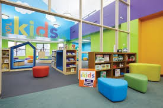

This paragraph demonstrates combined styling: internal, external and with !important rule. It highlights the styling approach using IDs, classes and inline/in-document styles.
External Resource| Library Types | ||
|---|---|---|
| Public Library | Digital Library | Children's Library |
|  | ||
| Go to Public Library | Go to Digital Library | Go to Children's Library |
| Explore historical documents, rare manuscripts, and archived newspapers. | Access e-books, audiobooks, and digital research materials. | A dedicated space for young readers with interactive books and learning materials. |
| Category | Main Focus | Access | Resources | Audience | Extra Info |
|---|---|---|---|---|---|
| Public Library | Free access to knowledge and local culture | Open to all | Books, newspapers, internet, events | General public | Government-funded, promotes lifelong learning |
| Name | Location | Opening Hours | Contact |
|---|---|---|---|
| Main City Library | Downtown | 9am - 8pm | (555) 123-4567 |